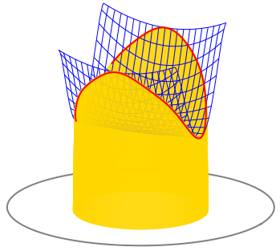
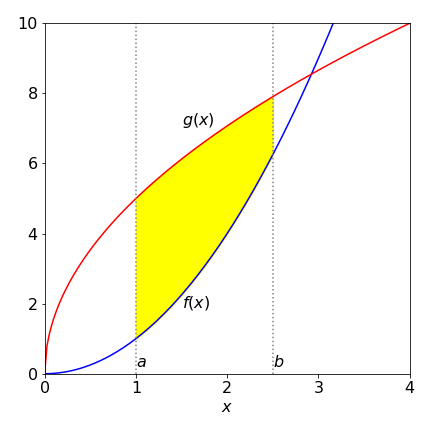
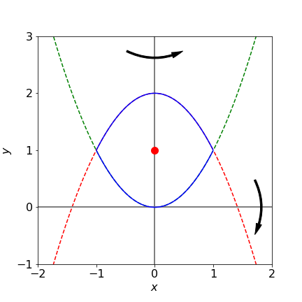
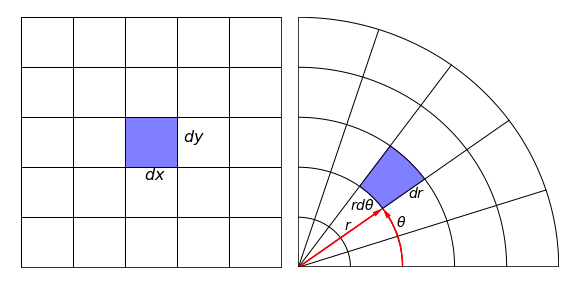
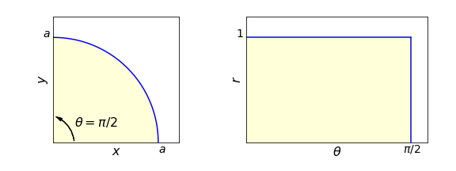
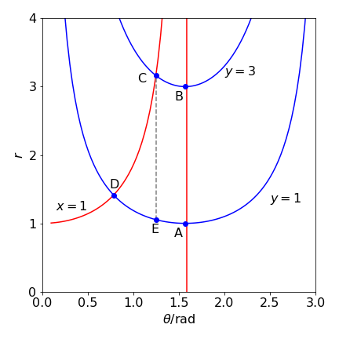

10 Multiple integrals, Change of variables: Jacobians
Contents
10 Multiple integrals, Change of variables: Jacobians#
# import all python add-ons etc that will be needed later on
%matplotlib inline
import numpy as np
import matplotlib.pyplot as plt
from sympy import *
init_printing() # allows printing of SymPy results
plt.rcParams.update({'font.size': 16}) # set font size for plots
10 Introduction#
Many functions contain two or more variables; for instance, the distance of the electron in a hydrogen atom depends on its x, y, and z-position from the nucleus. Any point on a plane is given by its x- and y-coordinates or on the earth by its latitude and longitude. To evaluate a double or triple integral, each integral is performed with the same rules as a single integral but care must be taken to sort out the integration limits. The use of multiple integrals quite often involves transforming variables, from Cartesian \(x, y, z\) to different forms of polar or cylindrical coordinates depending on the problem. The only reason for doing this is to simplify the integration and the only difficulty is unfamiliarity with the new coordinates.
Integrating over a surface such as \(f (x, y)\) with the double integral \(\int\int f (x, y)dydx\) means integrating along the x- and y-axes to obtain the volume between the surface and the \(x-y\) plane. The extent of the integration is determined by the limits to the integration in the \(x-y\) plane. Figure 22 shows the case when the limits are constants and then the integral is written as

Figure 22. A double integral pictured as the volume between a surface, shown as a blue mesh, and the \(x-y\) plane, shown as a circle.
The volume produced is like a rectangular rod with a flat base but a top cut to the shape of the function. The next integral is easily evaluated as two separate ones because the integration limits are constants and the terms can be separated. Note how the integral signs and the variables are written - inside to inside and first to last:
In quantum mechanics, double and triple integrals often have the form where one coordinate’s function is unity and integration is made over some range of angles; \(\varphi\) ranges from \(0 \to \pi\) in the following integral

Figure 23. Limits to the double integral in the \(x-y\) plane. The integral is th volume above the shaded area and towards the reader and extends to the function \(f(x,y)\).
More interesting is the case when the double integral is bounded in the plane by variable limits. As shown in figure 23, \(x\) has limits \(a \to b\) but \(y\) has limits which are the functions \(g\) and \(h\), which both depend on \(x\). As the \(y\) limits are not constant the integral is written as
Notice also the order of integration. As written, the integration on \(y\) must be performed first and the result is a function of \(x\) and is integrated last. The \(y\) integration has to have limits depending on \(x\) or ones that are constant. It cannot have limits depending on y because the result could not be integrated by \(x\).
Suppose that \(f=\ln(x)\) and the two functions \(g\) and \(h\) are \(g=x^2\) and \(h=2-x^2\) and the \(x\) integration range is from \(-1 \to 1\), as shown in Figure 24. The double integral is
The inner integral has to be found first which will give a result in \(x\). This is then integrated. The inner integral is a standard one and using Sympy to do the calculation and put in limits gives
x,y = symbols('x,y', positive = True)
ansy = integrate(log(y),(y,x**2,2-x**2))
Integrating this result with \(x\) from \(-1 \to 1\) gives
simplify( integrate(ansy,(x,-1,1) ) )
and this result can also be expressed using \(\displaystyle 2\tanh^{-1}(x)=\frac{\ln(1+x)}{\ln(1-x)}\) as \(\displaystyle \int_{-1}^1\int_{x^2}^{2-x^2}\ln(y)dydx=-\frac{64}{9}+\frac{16}{3}\tanh^{-1}\left(\frac{1}{\sqrt{2}} \right)\).
10.1 Mean values, moments of inertia, and centroids#
The double integral is useful in obtaining the mean value, centroids and moments of inertia of functions and is an alternative way to that described in Section 8.2. In these equations the order of integration is not necessarily implied by the way in which they are written. The integration order is unimportant if the integration limits are constants but is if they depend on x then the y integral must be done first as in equation 51.
The integral
is a volume of unit thickness. The result \(A\) is also called a lamina, which is a sheet of unit but uniform thickness.
The x-centroid, the average position of the x-coordinate of the function is
and similarly for the y-coordinate \(\displaystyle \langle y\rangle =\frac{1}{A}\int\int y\,dxdy\).
If the density is not constant but is described by a function \(f(x, y)\) then the formulae are changed to;
which is essentially equation 28. The position of the centroids is often called the centre of gravity of the object.
By definition, the moment of inertia of an object about an axis is the product of the distance squared from the axis times the mass; \(I = mL^2\). If the body is extended, then the integration must be performed over the entire shape. Should the mass is distributed as \(f (x, y)\) then the x-direction moment of inertia depends on the distance from the y-axis and is
The y-direction moment is calculated similarly using \(x^2\),
If the mass is uniform then the function f is a constant and can be taken outside the integration.
These various calculations are now illustrated. To calculate the lamina’s area using equation 52 the limits have to be defined. In Figure 24 the closed area is that bounded by \(g = x^2\) and \(h = 2 - x^2\) from \(x = -1 \to 1\) and these will determine the integration limits. Notice that the \(y\) integral is performed first which produces a result in \(x\) that is then integrated. The area is calculated as
The centroids are
as would be expected for this symmetrical shape.

Figure 24. Area bound by \(x^2\) and \(2 - x^2\) between \(-1\) and \(1\) is shown as the solid line. Rotation about \(x\) and \(y\) is indicated illustrating that the x-axis moment of inertia will be largest. The centroid (\(0,\,1\)) is marked.
The moments of inertia of an object, even with some symmetry, are generally quite different along its various axes and this is the case for the \(x\) and \(y\) moments of inertia of the lamina Figure 24. Using equation 55 with \(y^2\) or \(x^2\) as necessary and assuming uniform density of \(1,\, f (x, y) = 1\) then the moments of inertia \(I_y\) and \(I_x\) about the y- and x-axes are respectively, \(\displaystyle I_y=\int_{-1}^1 \int_{x^2}^{2-x^2} x^2 dydx,\; I_x=\int_{-1}^1 \int_{x^2}^{2-x^2} y^2 dydx\).
x,y = symbols('x,y',positive=True)
Ix=integrate( integrate( y**2, (y,x**2,2-x**2) ),(x,-1,1) )
Iy=integrate( integrate( x**2, (y,x**2,2-x**2) ),(x,-1,1) )
print(Ix,';',Iy)
344/105 ; 8/15
The moment of inertia about the x-axis is greater (by approximately \(6\) times) than that about \(y\) because the rotation about \(x\) involves the whole body rotating around this axis whereas the body is symmetrically disposed about the y-axis and therefore the moment of inertia is smaller. The moments of inertia of molecules are described in Chapter 7.15.
10.2 Triple integrals#
Triple integrals are calculated in a similar way to double ones, but instead of producing a volume a density function is produced. This might literally be density if the mass/unit volume of a solid is known, but generally, density is taken to mean the amount of ‘stuff’ in a given volume such as electron density or probability of being at a certain position in an atomic orbital.
One commonly met triple integral is the normalization of a wavefunction \(\psi(r, \theta, \phi)\); when integrated over all space the product \(\psi^* \psi\) must be unity. This means that
where the superscript * indicates a complex conjugate. The \(r^2\sin(\theta)drd\theta d\phi\) term comes from converting the volume element \(dxdydz\) in Cartesian to spherical polar coordinates; see Section 11 where the calculation of this conversion is described. The limits are almost invariably the same for quantum problems. The polar angle \(\theta\) ranges from north to south and can only have values from \(0 \to \pi\). The azimuthal (equatorial) angle \(\phi\) moves around the equator so ranges from \(0 \to 2\pi\).
One of the \(3\)p atomic orbitals has quantum numbers \(n = 3,\, s = 1, \, m = 1\), and is
where \(N\) is the normalization constant we want to find. Because \(r, \,\theta, \, \phi\) are separate there being no term in a product such as \(\theta\phi\) when calculating equation (4.56), the integrals in \(r,\, \theta\), and \(\phi\) can be treated separately. The integral of \(\psi^*\psi\) just in \(r\) is
where the second \(r^2\) comes from the volume element, eqn 56. This integral has a standard form, (two terms of the type \(x^ne^{-ax}\)) which can be integrated by parts; see (2.13). Using Sympy, because the calculation while straightforward is involved, gives for the radial part equation 58
a0,r,N=symbols('a0,r,N',positive=True)
eq= r**4*(6-r/a0)**2*exp(-2*r/(3*a0))
(N/a0)**2**2*integrate(eq,(r,0,oo))
The angular part of the integral
are simplified by separating the \(\theta\) and \(\phi\) integrals into two then evaluating the complex conjugate first, because \(e^{-i\phi}e^{i\phi} = 1\). The remaining integral is
and the sine integral was worked out by converting to the exponential form. Multiplying the two results and rearranging gives the normalization as \(\displaystyle N=\frac{1}{81\sqrt{\pi}}\sqrt{\frac{1}{a_0^3}}\)
11 Change of variables in integrals: Jacobians#
In Section 3 the method of simplifying an integration by a change of variable was described. A commonly used change of variables in multiple integrals is from Cartesian either to plane polar or spherical polar coordinates. The (plane) polar coordinates are two dimensional and spherical polar are three dimensional; see Chapter 1.6.1. They are used only to simplify a calculation by using those coordinates that reflect the underlying symmetry of the problem being studied, thus the shapes of the s, p, d and other atomic wavefunctions (orbitals) are naturally described in terms of three-dimensional spherical polar coordinates with a radius \(r\), a polar \(\theta\), and an equatorial (azimuthal) angle \(\phi\). However, many two or three or higher dimensional integrations can be simplified by a suitable algebraic substitution, which may also be thought of as a change of coordinates. Fortunately, there is a systematic way of doing this using a determinant of derivatives, called the Jacobian and these are described in this section. Determinants are described in Chapter 7.
A one-dimensional example is considered first. An apparently hard integral such as \(\displaystyle \int_0^b x\sqrt{ a^2 -x^2} dx\) can be simplified by substituting \(u = a^2 - x^2\), calculating the differential \(du=-2xdx\) and changing the limits. The result is
Ignoring the limits for clarity, a general integral of a function \(f(x)\) and its substitution can be written as
where \(F\) is the function \(f\) in the new variable \(u\) and the new function \(J\) contains the terms needed to ‘distort’ \(dx\) into \(du\). This is done by using the differential \(dx = J(x, u)du\) where
A two-dimensional integral in its general form with a change of coordinates is
where \(f\) is some normal function of \(x\) and \(y\), perhaps \(\sin(y)/\sin(x)\) and \(u\) and \(v\) are functions of \(x\) and \(y\). What these are depends on the particular calculation. In three dimensions, the general equation for the transformation is similar but rather formidable,

Figure 25. An area in \(dxdy\) and morphed to an equal value \(rdrd\theta\) in Cartesian and plane polar coordinates. Infinitesimal lengths \(dx\) etc. are greatly exaggerated relative to the axes. \(\theta\) is the angle formed by moving anticlockwise from zero degrees starting at the horizontal line.
The change of coordinates means that the volume \(dxdydz\) has to be distorted or morphed into an equivalent volume in the new coordinates \(drd\theta d\phi\). Therefore the new function, the Jacobian \(J(x, y, z, r, \theta, \phi)\), has to be found.
Any coordinate change or substitution has three parts
(a) Calculating the Jacobian,
(b) Substituting the new variables into the function \(f\),
(c) Changing any limits on the integration to the new coordinates.
These are best illustrated with examples. A point (\(x, y, z\)) is equivalently (\(r, \theta, \varphi\)) in spherical polar coordinates, the connection between the two sets of coordinates is described by geometry and is
In plane polar or just polar coordinates the point (\(x, y\)) is represented as (\(r, \theta\)) with
In this case the area element \(dxdy\) becomes \(rdrdθ\) and these are shown in Fig. 4.25.
In the case of the polar coordinates the area is relatively easily calculated. The circumference of a circle is \(2\pi r\), which is the radius times the angle rotated which is \(2\pi\) radians. The length of the arc for a small angle is therefore \(rd\theta\) for angular change \(d\theta\). The radius extends from \(r \to r + dr\) making the area \(rdrd\theta\). For other coordinates, the geometrical calculation is complex and an algebraic method is therefore preferred. This method, presented without proof, is to form the Jacobian, which is the determinant of the derivatives of the equation converting one set coordinates into the other.
Consider now the spherical polar coordinates, the function \(J(x, y, z, r, \theta, \varphi)\) is needed and changing to the conventional notation this is the determinant of the partial derivatives of \(x, y, z\) with \(r, \theta, \varphi\) and is defined as
Notice the ordering; the old coordinates \(x, y, z\) are on the top of each differentiation. Note also the notation in the brackets with \(J\). Using equation 59 the determinant is
The volume element conversion is then written as
In some cases, the determinant may produce a negative answer depending on the order of calculating the derivatives; however, the Jacobian represents an area or volume element so the positive result may legitimately be taken in such cases.
A few examples are now worked through.
(i) A coordinate change may simplify#
A coordinate change will simplify the integral
The changes are \(x=u(1+v),\, y=v(1+u)\). The general form of the equation is
The first two steps in the calculation are necessary because no limits are given. In step (a) the Jacobian is calculated and is
Step (b) is substituting into the function to find \(F(u, v)\) and this produces
and multiplying this with the Jacobian makes the integral rather simple:
(ii) Covert to plane polar coordinates#
The integral
can be solved by converting to (plane) polar coordinates. The limits are converted first. As \(x\) extends from \(0 \to 1\) so does \(r\) as this is the radius in polar coordinates. As \(x = r\cos(\theta)\) and \(y = r\sin(\theta)\) then \(r^2 = x^2 + y^2\), which represents a circle. The maximum value \(r = 1\); therefore \(x^2 + y^2 = 1\) and integration is around the first quadrant of a circle of unit radius, in the new coordinates the integration area is a rectangle where \(r\) ranges from \(0 \to 1\) and \(\theta\) from \(0 \to \pi/2\). The angle \(\theta\) varies from \(0 \to \pi/2\) and \(r\) from \(0 \to 1\), Figure 26, making,

Figure 26. The integration area in the \(x-y\) and \(r-\theta\) planes, \(r\) ranges from \(0 \to 1\) and \(\theta\) from \(0 \to \pi/2\).
Evaluating the integral in \(\theta\) first produces \(\displaystyle r^2-\frac{2}{15}r^6\) which is easily integrated to five \(\displaystyle I=\frac{11}{35}\). The angular integral using Sympy is
x,y,r,theta=symbols('x,y,r,theta',positive =True)
eq= r**2*cos(theta)-r**6*cos(theta)**2*sin(theta)**3
integrate( eq,theta)
(iii) Change to polar coordinates#
The following integral will be solved by transforming to polar coordinates
Using equation 59 gives,
as determined also by the geometrical argument in Figure 25. A limit of \(x\) means that this varies as \(y = x\) a line with a gradient of one or at \(45^\mathrm{o}\) to the x-axis which is the same as \(\theta = \pi/4\). The integration is therefore in the area from \(\theta = 0 \to \pi/4\) and with \(r\) extending from \(0 \to \infty\).
Substituting into the integral gives
which can be separated into integrals in \(r\) and \(\theta\), since there is no term in both variables, and the limits of the integration are constants. The integrals are standard ones, see Section 2.13. Using Sympy gives \(\displaystyle I=\frac{1}{8}\left( \frac{\pi}{2}-1 \right)\). The calculation is shown below without limits.
r,theta=symbols('r,theta',positive=True)
eqr = r**3*exp(-r**2)
ans_r = integrate(eqr,r )
eqt = cos(theta)**2
ans_theta = integrate(eqt,theta )
trigsimp( expand(ans_r*ans_theta) )

Figure 27 Example (iv). Integration limits in the \(\theta - r\) plane.
(iv) A second polar coordinate example#
The integral \(\displaystyle I = \int_0^3\int_0^1\frac{x^2}{(x^2+y^2)^{5/2}}dxdy\)
can be solved by converting to polar coordinates first then changing the integration limits. Converting produces
Changing the limits is more involved in this example. The initial values are a rectangular shaped area bounded by \(x=0 \to 1\) and \(y=1 \to 3\). When \(x\) is zero \(\theta=\pi/2\),and the boundary line \(y = 1\) becomes \(r = 1/\sin(\theta)\), the line \(y = 3, r = 3/\sin(\theta)\) and \(x = 1, r = 1/\cos(\theta)\) and the integration area in the \(r - \theta\) is that shape enclosed by these curves as shown in Figure 27. (See Dence 1975, p. 109.)
The integration has to be split into two parts because CD is sloping: the areas ABCE and CDE. The coordinates of the points are the intersections of their respective curves, except E, which is at point \(\left(\tan^{-1}(3), 1/\sin(\,\tan^{-1}(3)\,)\right )\). The integration limits for \(r\) are \(1/\sin(\theta) \to 3/\sin(\theta)\) and for area ABCE, \(\theta = \tan^{-1}(3) \to \pi/2\) and for CDE, \(\theta = \pi/4 \to \tan^{-1}(3)\).
The calculation in Sympy is shown below and is in two parts The result for the first part is
r, theta = symbols('r, theta', positive = True)
eq = cos(theta)**2/r**2
integrate(integrate( eq, (r, 1/sin(theta), 1/cos(theta) )), (theta, pi/4, atan(3)) ) # Double integral
and for the second part \(\displaystyle \int_{\tan^{-1}(3)}^{\pi/2} \int_{1/\sin(\theta)}^{3/\sin(\theta)} \frac{\cos^2(\theta)}{r^2} dr d\theta =\frac{\sqrt{10}}{450}\) making the result \(\displaystyle\frac{1}{\sqrt{2}}-\frac{19\sqrt{10}}{90}\).
integrate(integrate( eq, (r,1/sin(theta),3/sin(theta)) ), (theta,atan(3),pi/2) )